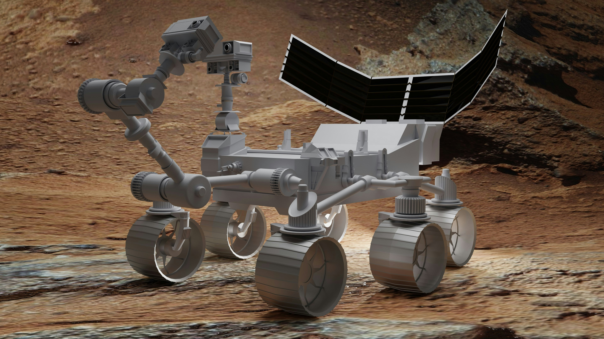
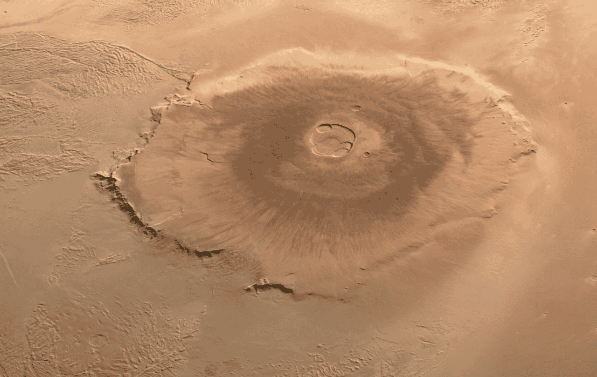
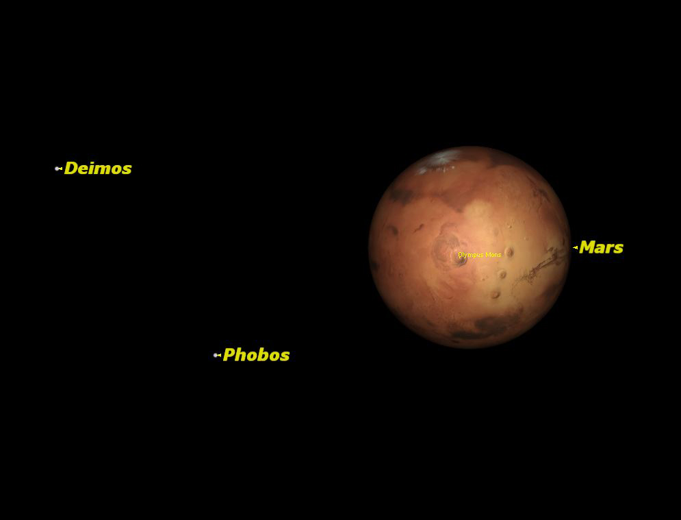
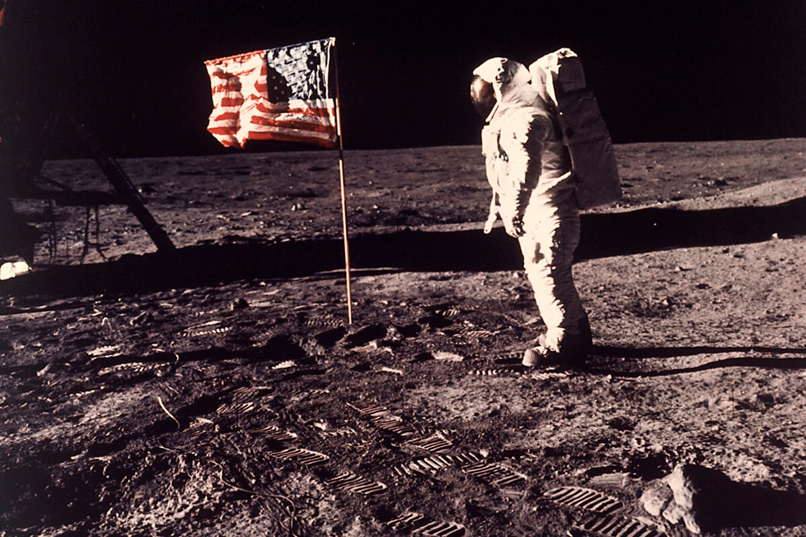

logs, photos, and snippets of our Martian history

NASA's Perseverance rover successfully landed on Mars on February 18, 2021. The spacecraft touched down in the Jezero Crater and planted the seeds of what would become our new home.

Olympus Mons was first spotted by astronomer Giovanni Schiaparelli in the late 19th century. It was later identified as the massive volcano, following images taken by the NASA Mariner 9 probe on November 14, 1971.

Our skies are adornes with Phobos' presence, which orbits us every 7 hours 39 minutes and 12 seconds Our other moon, Deimos, follows in a more distant orbit.

Humans finally reached our true form on the July 20, 1969, when Neil Armstrong took his first steps on the old moon's surface.